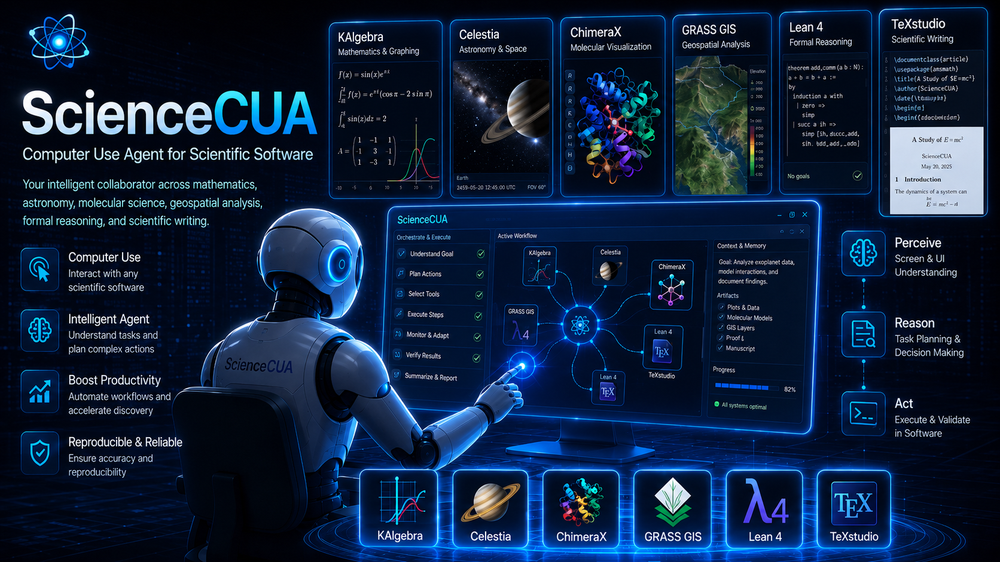

Computer Use Agent for Scientific Software
ScienceCUA
ScienceCUA is an umbrella project for studying computer-use agents in scientific software and realistic scientific workflows.
The current dataset release, ScienceBoard-Verified, provides verified scientific software tasks, evaluators, answers, prompts, and a VM environment for reproducible agent evaluation.

News
Updates
- We released ScienceBoard-Verified.